|
4-3-3
|
United States | 2 | - | 0 | Bosnia-Herzegovina |
5-3-2
|
| HT 1-0 | ||||||
|
FIFA World CupThursday 2 July 2026
|
||||||
- Venue
- San Francisco Bay Area Stadium
- Attendance
- 68,827
- Referee
- Raphael Claus
Goal45'
F. Balogun
Red card64'
F. Balogun
Goal82'
M. Tillman
Substitution87'
S. Dest
S. Berhalter
Substitution88'
C. Pulisic
R. Pepi
Substitution90+5'
W. McKennie
G. Reyna
Whistle45+10'
45+10'
- 3
Substitution51'
A. Gigović
E. Bajraktarević
I. Šunjić
B. Tahirović
E. Džeko
E. Mahmić
- 2
Substitution75'
S. Kolašinac
H. Tabaković
N. Katić
A. Memić
Yellow card80'
Sergej Barbarez
Yellow card80'
S. Radeljić
United States | |
|---|---|
Goalkeeper | |
| 24 | M. Freese |
Defender | |
| 3 | C. Richards |
| 5 | A. Robinson |
| 13 | T. Ream |
| 16 | A. Freeman |
Midfielder | |
| 4 | T. Adams |
| 8 | W. McKennie 90+5' |
| 17 | M. Tillman 82' |
Forward | |
| 2 | S. Dest 87' |
| 10 | C. Pulisic 88' |
| 20 | F. Balogun 45'64' |
Substitutes | |
| 7 | G. Reyna 90+5' |
| 9 | R. Pepi 88' |
| 14 | S. Berhalter 87' |
Bosnia-Herzegovina | |
Goalkeeper | |
| 1 | N. Vasilj |
Defender | |
| 4 | T. Muharemović |
| 5 | S. Kolašinac 75' |
| 7 | A. Dedić |
| 18 | N. Katić 75' |
| 21 | S. Radeljić 80' |
Midfielder | |
| 8 | A. Gigović 51' |
| 14 | I. Šunjić 51' |
| 19 | K. Alajbegović |
Forward | |
| 10 | E. Demirović |
| 11 | E. Džeko 51' |
Substitutes | |
| 6 | B. Tahirović 51' |
| 15 | A. Memić 75' |
| 20 | E. Bajraktarević 51' |
| 23 | H. Tabaković 75' |
| 26 | E. Mahmić 51' |


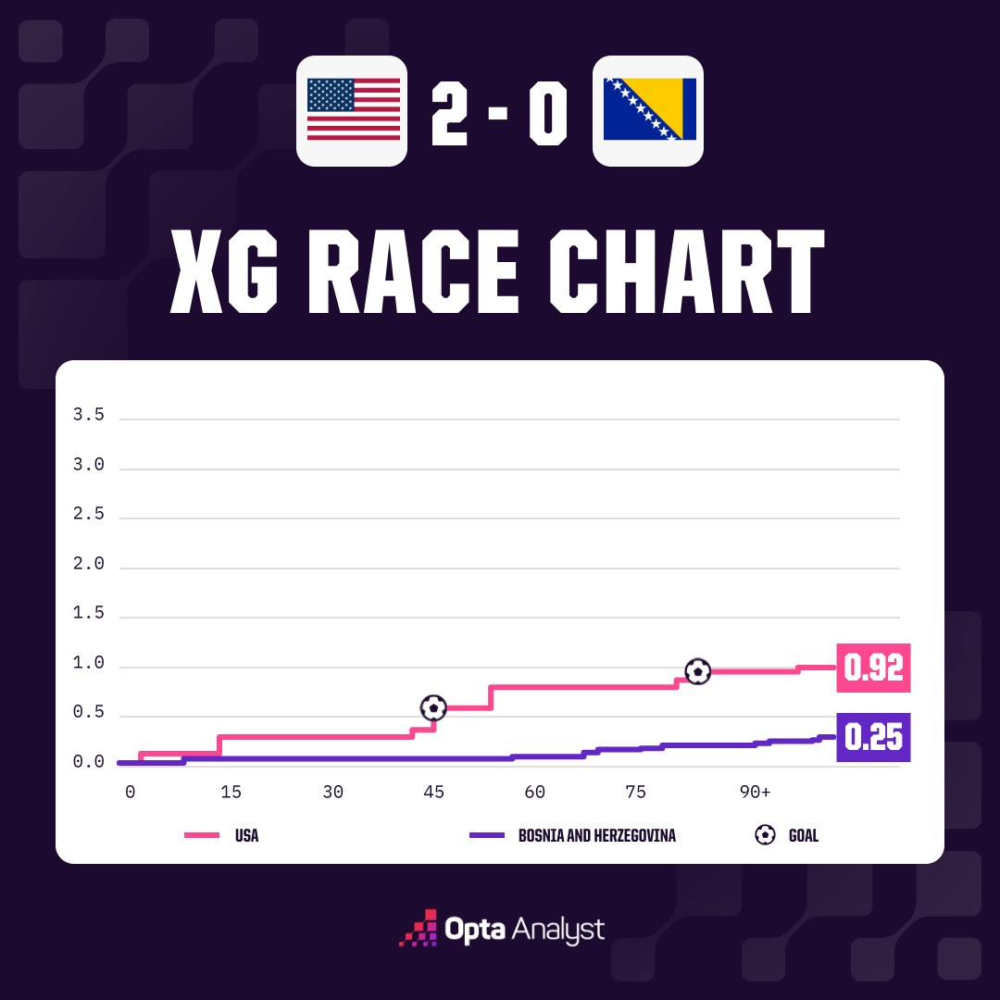
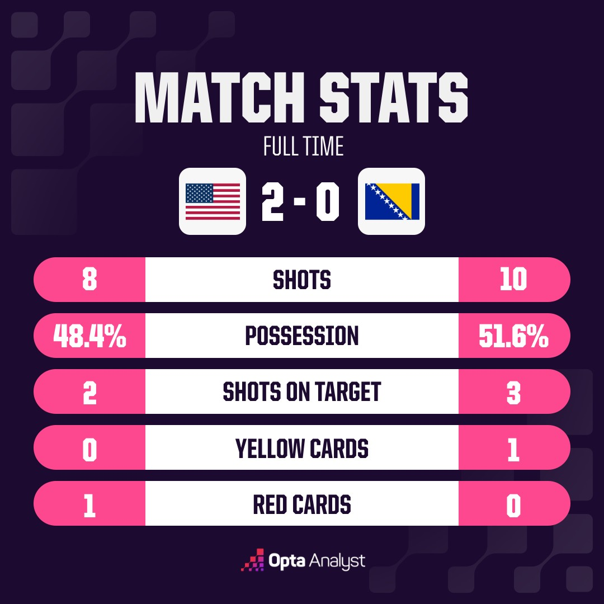
101'
United States attempted 8 shots in this game, their lowest total in a single match in the 2026 FIFA World Cup.
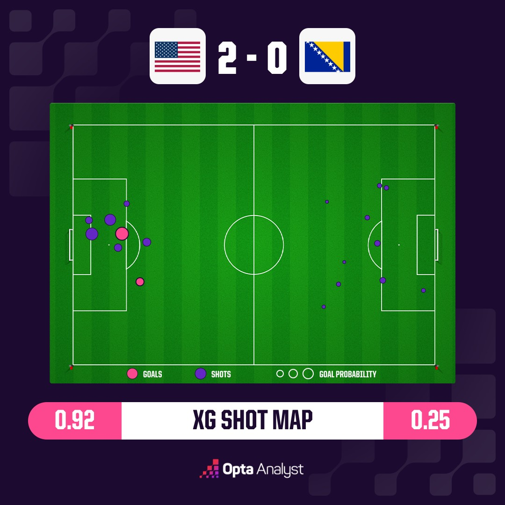
90+10'
IT’S ALL OVER! United States have taken the victory, winning 2-0 thanks to goals from Malik Tillman and Folarin Balogun. United States can celebrate, but Bosnia will have to lick their wounds.
90+10'
No luck – it’s offside! Ricardo Pepi looked to dart in behind and get on the end of a pass, yet they just went too early, and the flag is up to signal offside.
90+10'
Ermedin Demirović goes in on Tim Ream and concedes a foul. The free-kick is not in a particularly dangerous area from Bosnia’s viewpoint, though.
90+9'
A chance goes begging as Ermin Mahmić gets off a shot that does not hit the target. They might have done better with that one, but instead it is a goal-kick to United States.
90+8'
That is a disappointing effort from Ermin Mahmić, who went for glory but got their attempt wrong, and the shot sailed off target. A frustrating moment for Bosnia.
90+7'
Bosnia have had plenty of the ball in the last 15 minutes, with 68.79% possession compared to just 31.21% for their opponents. However, there’s not been any goal to come from that possessional dominance just yet.
90+6'
A chance goes begging as Alex Freeman gets off a shot that does not hit the target. They might have done better with that one, but instead it is a goal-kick to Bosnia.
90+5'
The United States manager is looking to the substitutes’ bench, bringing on Giovanni Reyna in place of Weston McKennie. Will the change make a difference? Let’s find out!
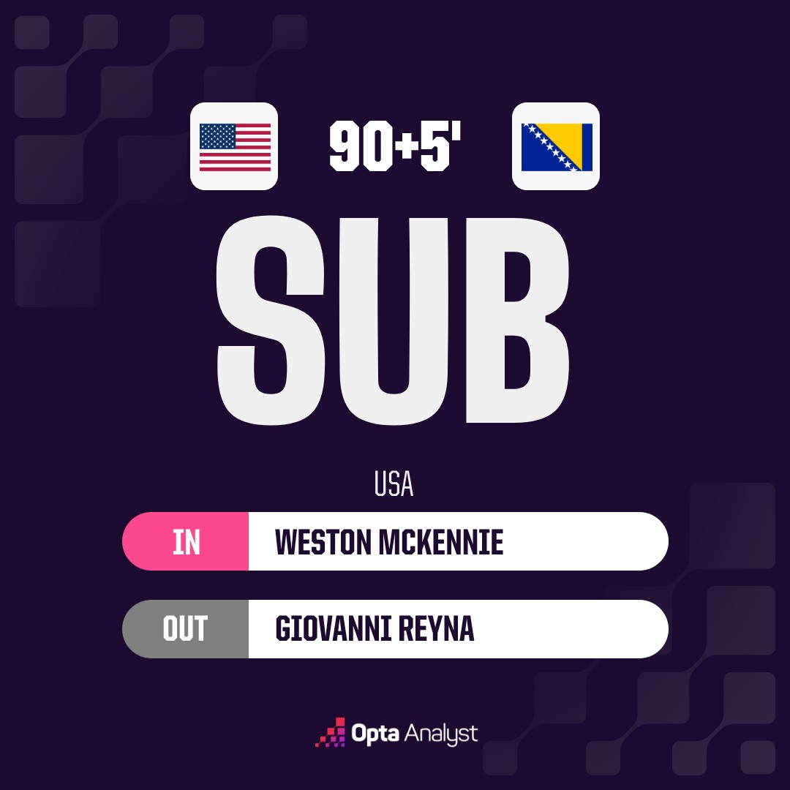
90+5'
A free-kick in a dangerous position now for United States, after a foul from Amar Memić on Malik Tillman. Can United States make Bosnia pay for that rashness from Amar Memić?
90+4'
It's all hands on deck for United States as they defend their lead, making a wave of critical blocks and clearances
90+3'
Free-kick! A foul from Weston McKennie on Stjepan Radeljić. It is well away from United States’s goal, so it is unlikely to result in a chance for Bosnia.
90+2'
MISS! A shot from Kerim Alajbegović ends up being off target. They might have done a bit better with that one, but it remains Bosnia 0-2 United States.
90+1'
Foul! A free-kick now in a dangerous area for Bosnia, after Stjepan Radeljić is fouled by Ricardo Pepi. Can Bosnia make the most of this opportunity?
90+1'
That might have been going in! A fantastic block from Chris Richards, who gets in the way of a goal-bound effort from Amar Memić. Would the goalkeeper have been beaten? We will never know.
89'
It’s backs to the wall now — United States throwing everything into defending their advantage, with a flurry of crucial interventions.
88'
United States are making a tactical change. Christian Pulisic is leaving the field and in their place comes Ricardo Pepi – we will soon see if this switch has the desired impact.
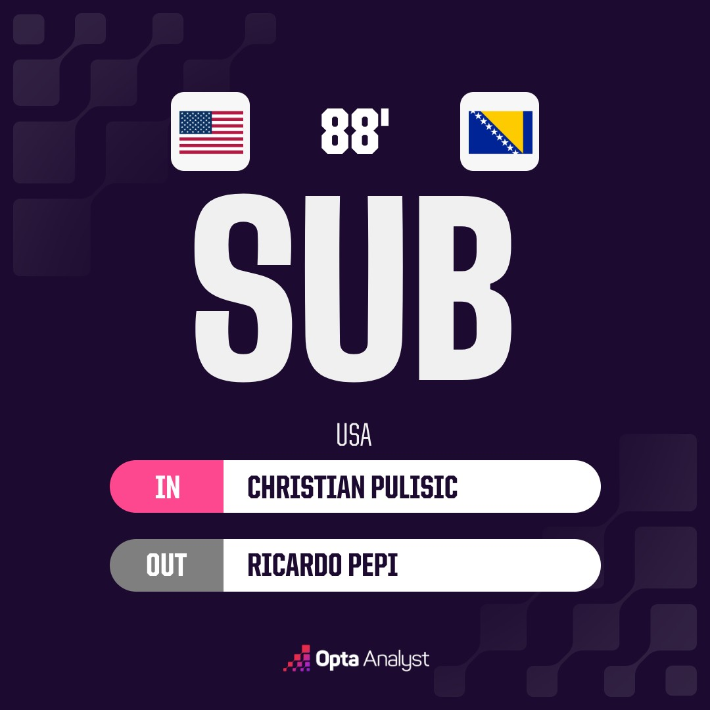
88'
United States are making a tactical change. Sergiño Dest is leaving the field and in their place comes Sebastian Berhalter – we will soon see if this switch has the desired impact.
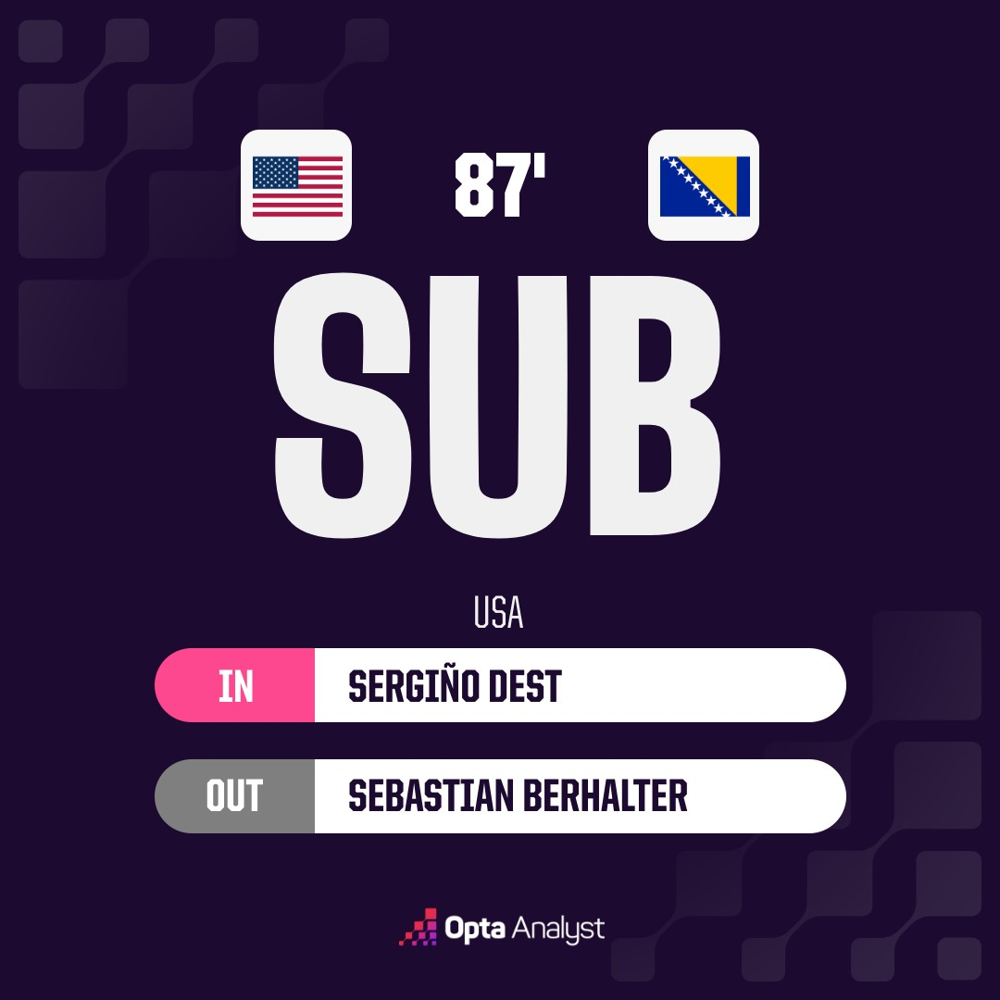
87'
A foul from Ermedin Demirović on Matt Freese sees United States win a free-kick, but it is not in a dangerous position, so Bosnia should be confident they can defend it easily enough.
82'
Is that game over? United States are now well ahead, having extended their lead to 2 goals thanks to Malik Tillman’s effort. It’s now 2-0, and Bosnia face an uphill battle to get back into it.
82'
Malik Tillman has scored his first goal in the 2026 FIFA World Cup.
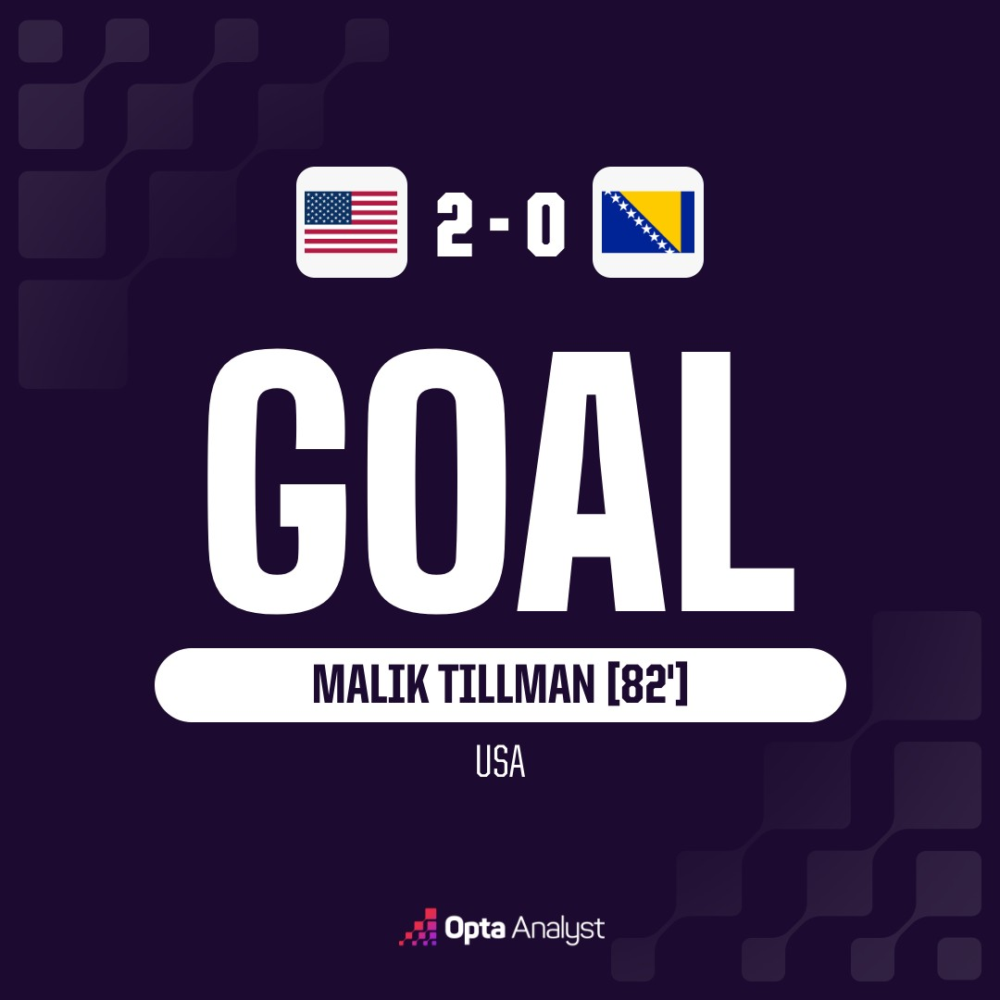
80'
The referee goes to their pocket and pulls out a yellow card, which is brandished in the direction of Stjepan Radeljić. Will they be able to avoid a second booking?
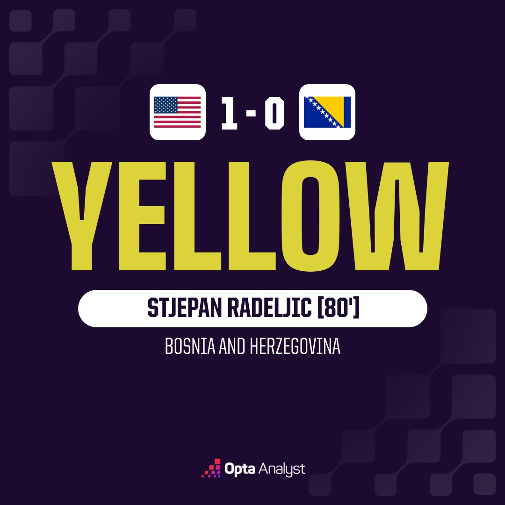
80'
Can United States make this chance count? They have won a free-kick in a threatening position after a foul from Stjepan Radeljić on Sergiño Dest. Will Bosnia's defence be tested here?
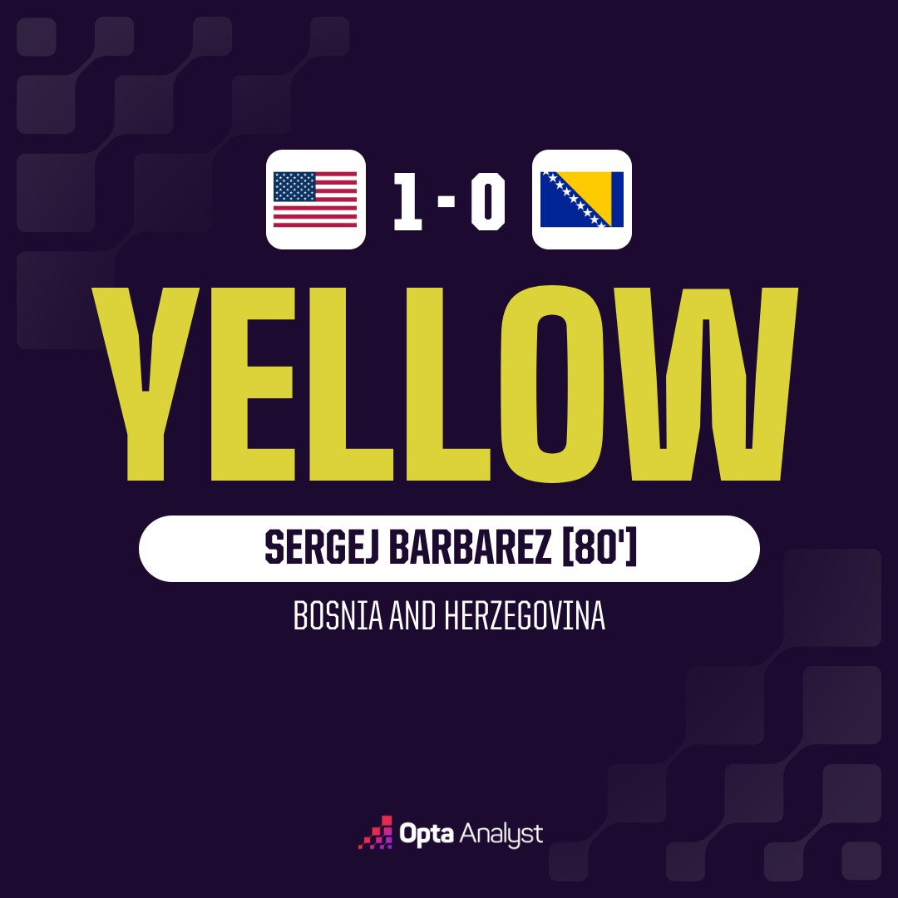
79'
Christian Pulisic makes a run in behind but the Bosnia defensive line were alert, and stepped up in time to catch them offside. That run just needed to be timed better.
79'
BLOCK! An intervention from Amar Dedić might have just prevented a goal, with the defending player getting in the way of an attempt from Malik Tillman. Solid defending there!
77'
A foul from Ermin Mahmić on Christian Pulisic sees United States win a free-kick, but it is not in a dangerous position, so Bosnia should be confident they can defend it easily enough.
77'
Bosnia-Herzegovina have attempted the last 5 shots in this game, United States last shot was taken by Folarin Balogun in the 53rd minute.
77'
Great block from Alex Freeman, as they get in the way of an attempt from Kerim Alajbegović that might have been set to cause the goalkeeper some problems. Solid defending from the United States player.
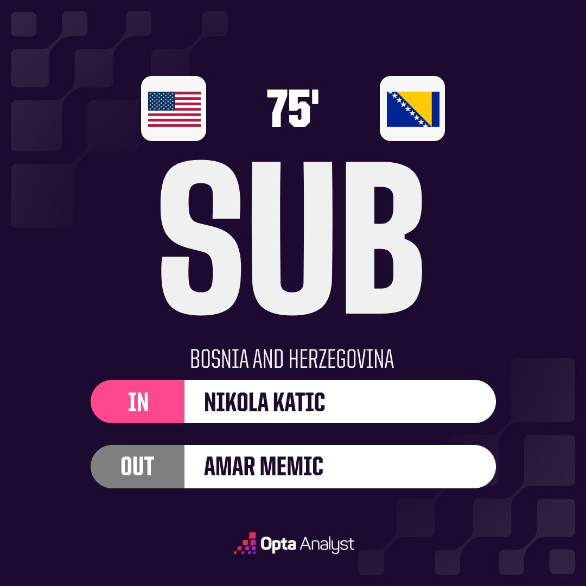
75'
The Bosnia manager is looking to the substitutes’ bench, bringing on Amar Memić in place of Nikola Katić. Will the change make a difference? Let’s find out!
75'
The Bosnia manager is looking to the substitutes’ bench, bringing on Haris Tabaković in place of Sead Kolašinac. Will the change make a difference? Let’s find out!
74'
BLOCKED! That was close. Amar Dedić got off a shot, which was heading in, but Chris Richards was on hand to make a vital intervention. Great block!
69'
Free-kick! A foul from Amar Dedić on Antonee Robinson. It is well away from Bosnia’s goal, so it is unlikely to result in a chance for United States.
67'
Bosnia have had plenty of the ball in the last 15 minutes, with 65.06% possession compared to just 34.94% for their opponents. However, there’s not been any goal to come from that possessional dominance just yet.
66'
CLOSE! Ermedin Demirović gets into a decent shooting position inside the United States area, and manages to find space to get an effort off. However, Matt Freese is equal to it.
66'
Neither team has had a shot in the past 10 minutes, as this match just enters something of a down period. Bosnia have seen more of the ball, with 67 per cent possession, but United States are keeping them away from goal. There is still a chance the match will spark into life, though.
66'
With 25 minutes left to play, it’s a good chance to check in on the shot count. Bosnia have mustered 2 so far, with 1 of those landing on target. On the other hand, United States have gotten 5 of their 1 of attempts on target.
64'
Folarin Balogun has received a red card - United States's first sending off in the 2026 FIFA World Cup , and their first since 17th June 2006 against Italy.
64'
RED CARD! United States are leading this contest but it may not stay that way for much longer! They will have to play the rest of the match short of full numbers after Folarin Balogun is dismissed.
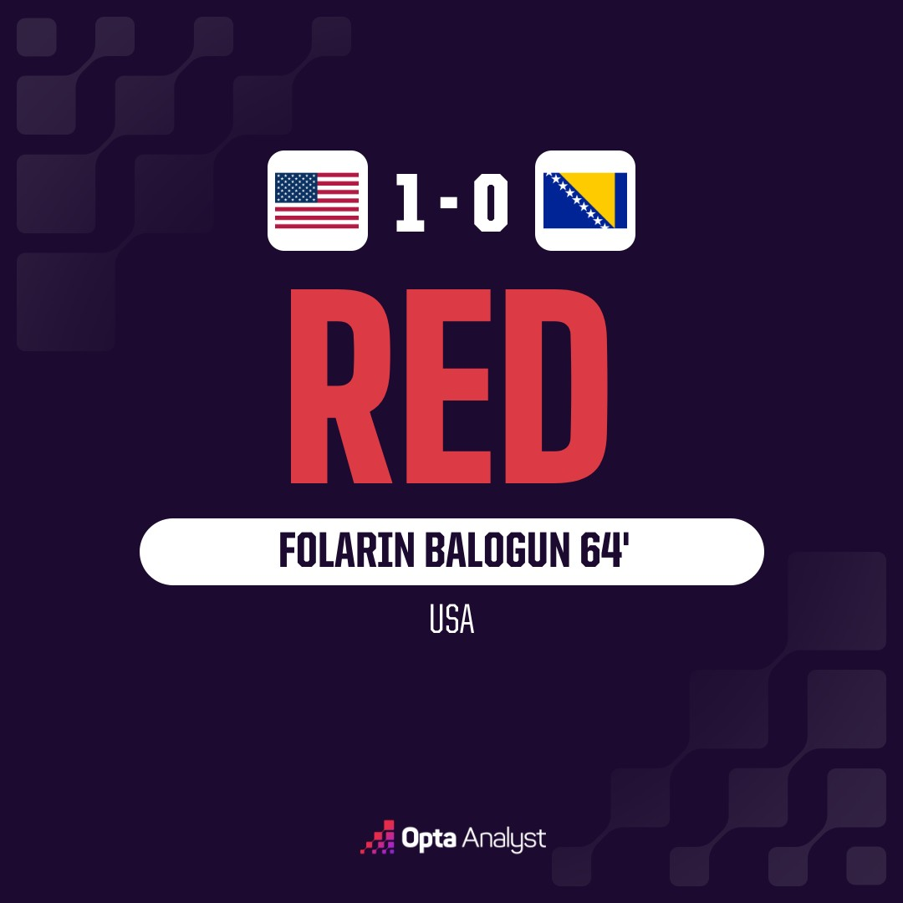
63'
Decision changed! After a VAR check, the decision has been overturned.
63'
This decision may not stand, as it is going to VAR. The referee has stopped the play while his video assistant reviews the incident.
61'
Free-kick! A foul from Folarin Balogun on Tarik Muharemović. It is well away from United States’s goal, so it is unlikely to result in a chance for Bosnia.
57'
Despite trailing, Bosnia are showing real defensive grit, digging in and stopping further damage as they try to build a platform.
56'
MISS! A shot from Nikola Katić ends up being off target. They might have done a bit better with that one, but it remains Bosnia 0-1 United States.
51'
That is bad news for Bosnia, as they suffer an injury blow, with Edin Džeko having had to receive treatment before then making their way off the pitch. Ermin Mahmić is coming on.
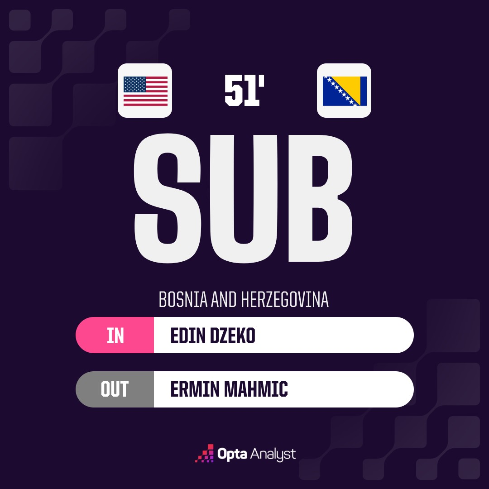
51'
Substitution! Benjamin Tahirović replaces Ivan Šunjić for Bosnia as the manager shuffles the pack. Can Benjamin Tahirović make an impression as this match continues?
51'
Armin Gigović’s match is over as Bosnia decide to make a substitution. Esmir Bajraktarević enters the field in what looks like a tactical change.
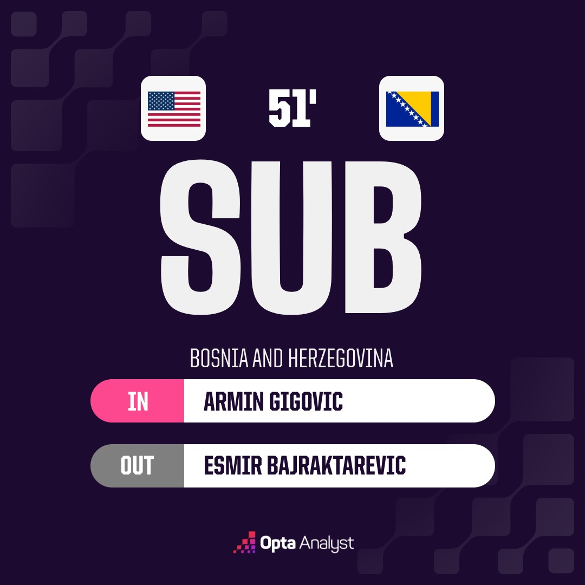
48'
Excellent defensive work from United States; their organization and success in key duels are effectively safeguarding their lead.
47'
A free-kick to United States, as Nikola Katić goes in and fouls Christian Pulisic. However, Bosnia will not mind giving one away in this area too much, with plenty of distance to their goal.
47'
Despite trailing, Bosnia are showing real defensive grit, digging in and stopping further damage as they try to build a platform.
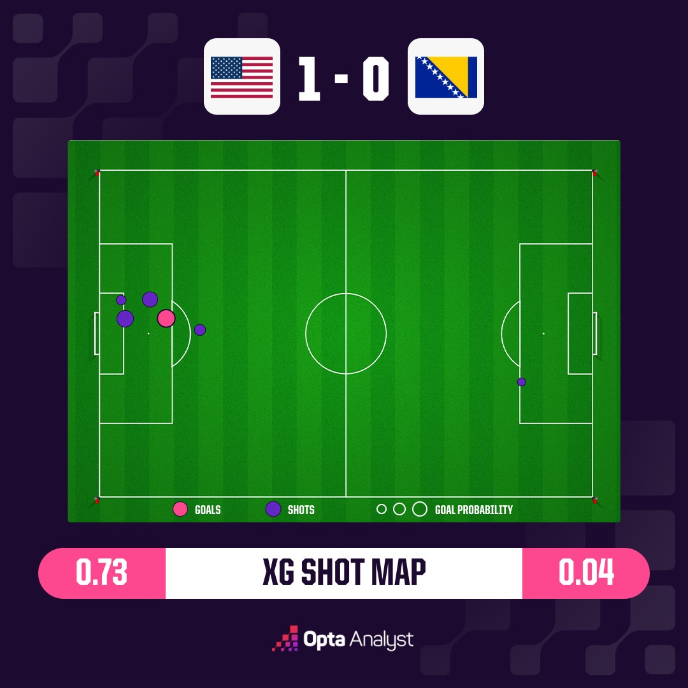
45+10'
Half-time! The referee blows the whistle and it is time for the interval. As we reach the break it is United States 1-0 Bosnia at San Francisco Bay Area Stadium.
45+8'
Oh no! That should have been in! Folarin Balogun was through but could not keep their composure when it mattered most. United States still lead, but they have not been able to extend it. Will that be the good fortune Bosnia-Herzegovina need?
45+6'
Good play from Christian Pulisic, who draws a foul from Amar Dedić to hand United States a free-kick in a dangerous position. Will they create something from this set-piece?
45+1'
Folarin Balogun has scored his third goal in the 2026 FIFA World Cup, netting for the first time since 13th June 2026 against Paraguay.
45+1'
GOAL! Folarin Balogun scores! United States have the lead in this entertaining contest. There is still lots of time left for further drama, but that intervention from Folarin Balogun has put Bosnia in a difficult position. Game on!
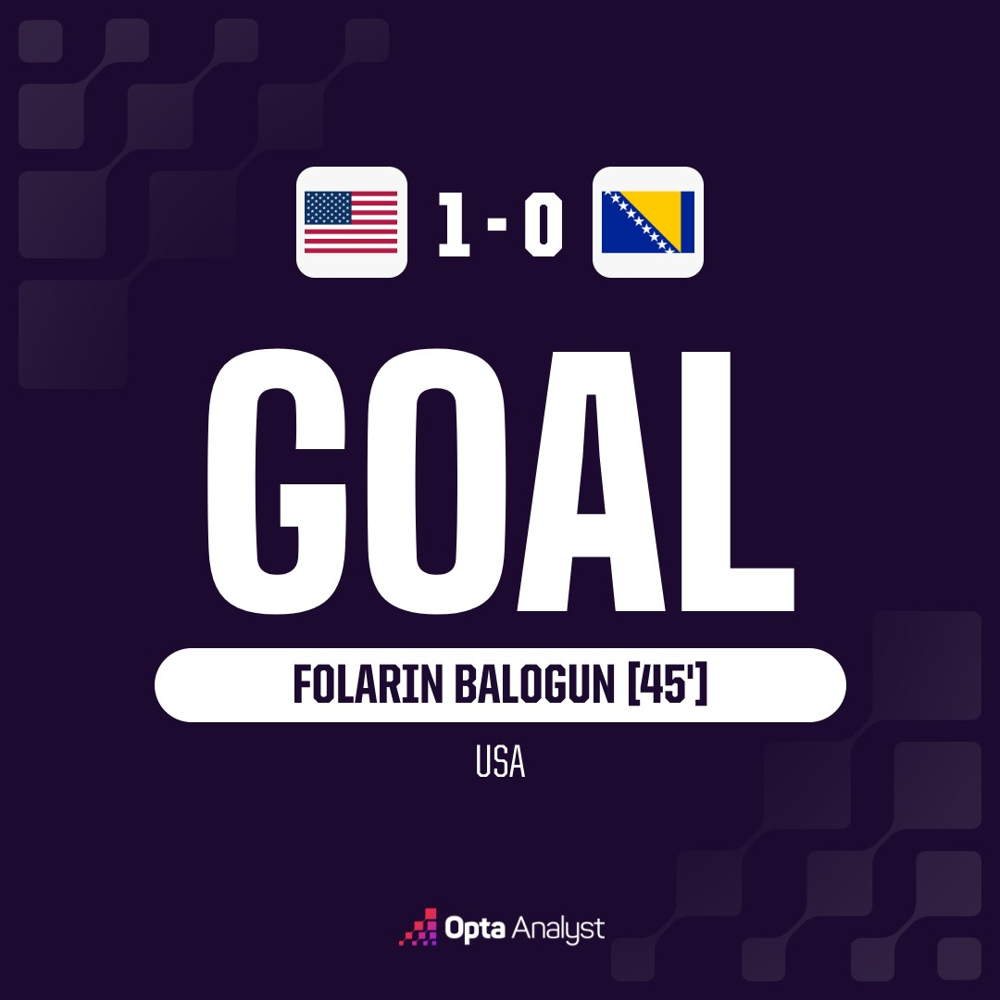
42'
MISS! The score remains 0-0, with Bosnia relieved after United States’s Folarin Balogun goes for goal but sends their attempt off target. Not one to write home about, that one.
41'
Can United States make this chance count? They have won a free-kick in a threatening position after a foul from Tarik Muharemović on Folarin Balogun. Will Bosnia's defence be tested here?
41'
United States have not had a shot on target so far in this game.
40'
It has been 30 minutes since Bosnia-Herzegovina last attempted a shot in this game.
38'
A free-kick to Bosnia, as Tyler Adams goes in and fouls Kerim Alajbegović. However, United States will not mind giving one away in this area too much, with plenty of distance to their goal.
37'
This game is certainly in a bit of a lull now, with neither team having had an attempt at goal in the past 10 minutes. It could do with something to spark it into life. United States have had more possession during the quiet spell, but are yet to do much with it.
33'
Chris Richards goes in on Ermedin Demirović and concedes a foul. The free-kick is not in a particularly dangerous area from United States’s viewpoint, though.
31'
The Bosnia defence steps up in time and there is a frustration for Folarin Balogun, who thought they were through until the flag goes up to signal offside.
31'
Sergiño Dest goes in on Stjepan Radeljić and concedes a foul. The free-kick is not in a particularly dangerous area from United States’s viewpoint, though.
30'
Plenty of the ball in the last quarter-of-an-hour of this match for United States, but Bosnia have been able to hold them off with ease, with United States having failed to even muster a shot at goal.
27'
A free-kick to Bosnia, as Antonee Robinson goes in and fouls Armin Gigović. However, United States will not mind giving one away in this area too much, with plenty of distance to their goal.
26'
Not much goalmouth action to speak of in this period of the game, with no attempts made from either side. This game could spark at any moment, however. It is United States who have had more of the ball, controlling 78 per cent possession in the last 10 minutes.
21'
A chance now for United States to get a good delivery into the box, after the ball is diverted behind for a corner. United States have been pushing for what would be a key goal, but Bosnia have stood firm so far.
20'
A foul from Ivan Šunjić on Christian Pulisic sees United States win a free-kick, but it is not in a dangerous position, so Bosnia should be confident they can defend it easily enough.
16'
There is plenty of possession for United States, with 77.46% compared to Bosnia 22.54 % in the last 15 minutes. However, United States have not been able to turn that dominance of the ball into a goal.
15'
That is a disappointing effort from Folarin Balogun, who went for glory but got their attempt wrong, and the shot sailed off target. A frustrating moment for United States.
14'
Can United States make this chance count? They have won a free-kick in a threatening position after a foul from Sead Kolašinac on Sergiño Dest. Will Bosnia's defence be tested here?
10'
SAVED! Good work from Matt Freese, who stands firm to deny Ermedin Demirović, who managed to get a shot away from inside the United States area.
8'
Free-kick! A foul from Ivan Šunjić on Malik Tillman. It is well away from Bosnia’s goal, so it is unlikely to result in a chance for United States.
8'
A rash challenge from Ermedin Demirović, who sends Chris Richards tumbling, giving United States a free-kick. It is not in a threatening position, but it gives them a chance to get back on the ball.
6'
It’s been tight so far, and Bosnia are making sure it stays that way with strong defensive discipline and well-timed clearances.
5'
Corner! United States are pushing for a goal and now they have an opportunity from this set-piece.
4'
Corner now for United States, as they see a shot from Christian Pulisic deflected out of play for a set-piece. Bosnia have some defending to do, here. Could this result in a big opportunity?
4'
Confident start by United States, knocking it around with purpose and keeping control in the opening phase.
1'
We are under way as Bosnia kick off at San Francisco Bay Area Stadium. Let's hope an entertaining contest is in store.
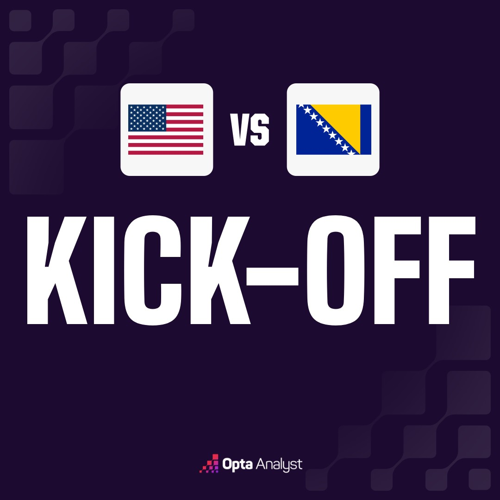
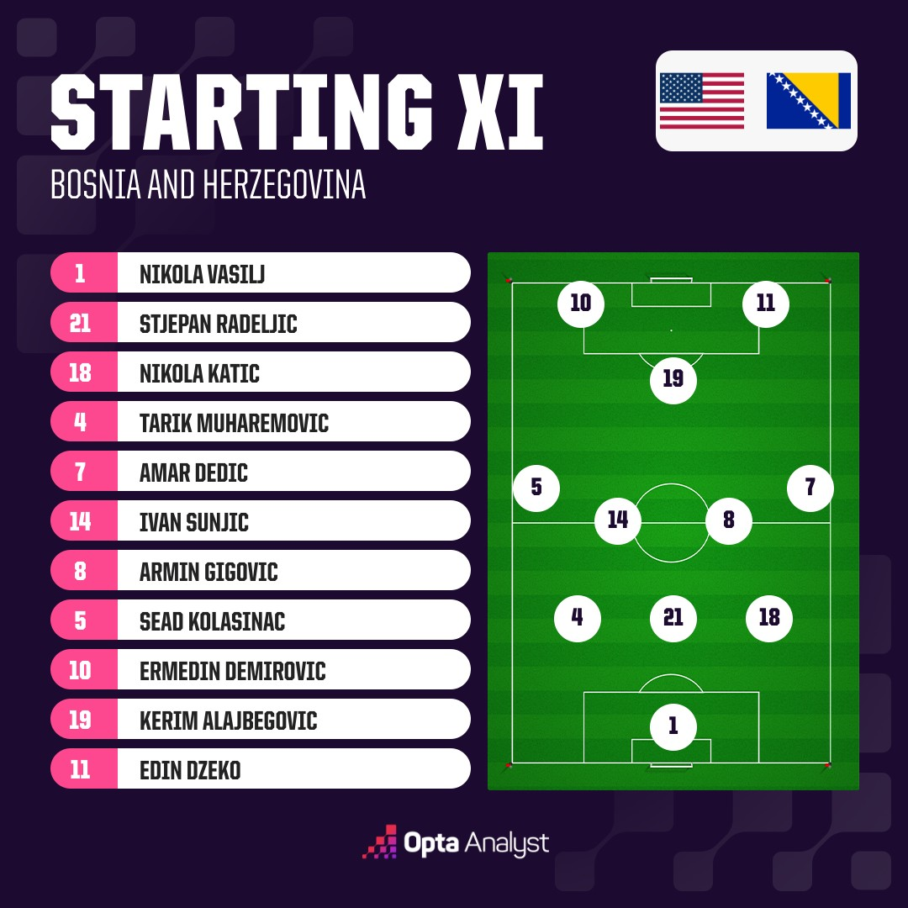
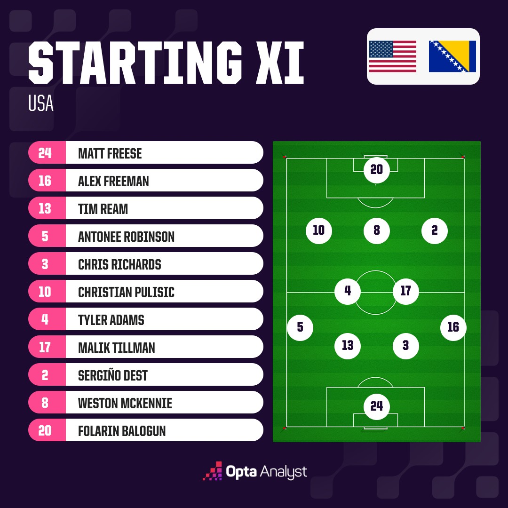
Both teams have scored in Bosnia-Herzegovina's last 9 games
The United States face Bosnia-Herzegovina on Wednesday for a FIFA World Cup Round of 32 clash at San Francisco Bay Area Stadium.
The United States' last group stage match saw them beaten for the first time in the competition this season 3-2 by Türkiye on June 25. Auston Trusty and Sebastian Berhalter scored in the loss. In seven games this year, they have three wins and four losses.
Bosnia earned a first win in the competition this year with a 3-1 victory over Qatar in their last group stage game, a June 24 clash at Seattle Stadium. Kerim Alajbegovic and Ermin Mahmic scored in the win. In 2026, they have won three, drawn three, and lost one.
The United States finished first in their group on six points, while Bosnia's four points placed them third.
The previous fixture between the sides saw the United States win 1-0 in a friendly at Dignity Health Sports Park in December 2021. Cole Bassett scored for the USA side in the 89th minute.
In attack, Folarin Balogun has been a key performer for the United States in World Cup play. The attacker is the team's top scorer with two goals. Bosnia have been led by Mahmic, who has scored twice in the current World Cup campaign.
Both sides are in the midst of successful World Cup scoring streaks, as each have found the net in every match in the competition this season.
In their last six matches in all competitions, the United States have won three and lost three. The USA side scored 12 and conceded 10 over that period, scoring first in four of the six contests. A majority of their goals (nine) came in the first half, while their opponents netted five times in the first 45 minutes. The Bosnian side have won one, drawn four and lost one in their last six. The Bosnian side scored seven and conceded eight over that stretch, netting first in three of the six. Most of their goals (four) came in the first half, while their opponents netted three times before the break.
-
General
Possession 48.4% 48.38451.61651.6% Possession lost in defensive half 23 234242 Possession lost in middle third 44 444545 Duels 83 838181 Duels success rate 56.6% 56.62740.74140.7% Aerial duels 21 212121 Aerial duels won 61.9% 61.90538.09538.1% Successful dribbles 9 933 Fouls won 13 1377 Offsides 3 300 Corner awarded 4 433 -
Distribution
Passes 415 415447447 Long passes 42 425050 Long passes proportion (%) 10.1% 10.1211.18611.2% Passing accuracy 84.1% 84.09681.65581.7% Passes in opponents' half 253 253210210 Passing accuracy in opponents' half (%) 78.7% 78.65672.85772.9% Total passes in the final third 117 1179494 Passing accuracy in final third (%) 65.8% 65.81263.8363.8% Forward passes 271 271279279 Forward passes (%) 65.3% 65.30162.41662.4% Through balls 2 200 Final third entries 61 615252 Penalty area entries 29 292222 Total open play crosses 8 81111 Crosses 14 141313 Crossing accuracy 21.4% 21.42900.0% -
Attack
Goals 2 200 Shots 8 81010 Shots on target 2 233 Blocked shots 2 233 Headed shots 0 000 Shots outside the box 2 255 Shots inside the box 6 655 Shots accuracy excluding blocked shots 33.3% 33.33342.85742.9% Shooting accuracy 25.0% 253030.0% Key Passes 5 566 -
Defence
Tackles 12 121515 Tackles success rate 66.7% 66.6678080.0% Clearances 28 282626 Interceptions 7 777 Recoveries 44 443131 Attacking third recovery 3 311 Defensive third recovery 21 211616 Midfield third recovery 20 201414 Recoveries in attacking half (%) 6.8% 6.8183.2263.2% -
Discipline
Fouls conceded 7 71313 Yellow cards 0 011 Red cards 1 100